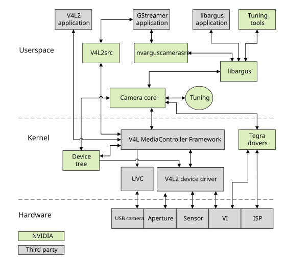
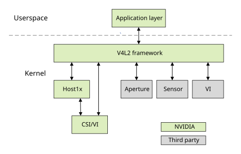
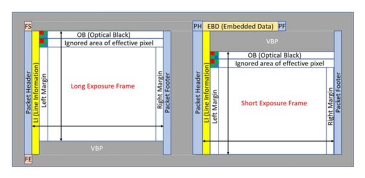
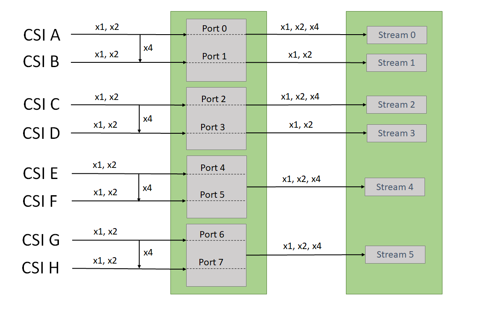

Sensor Software Driver Programming#
The camera sensor driver acquires data from the camera’s sensor over the CSI bus, in the sensor’s native format.
There are two types of camera programming paths. You must choose one, depending on the camera and your application:
Camera Core Library Interface
Direct V4L2 Interface
Camera Core Library Interface#
The camera core library provides all of the controls and performs all of the processing between the application and kernel-mode V4L2 drivers. Typical use cases for the camera core library interface include:
Applications that the NVIDIA® Jetson™ ISP functionality
Applications that must convert RGB format to YUV format and perform various post-processing tasks for Bayer sensors
The following diagram shows the Jetson Linux architecture framework with the application and kernel mode V4L2 drivers.

Direct V4L2 Interface#
In applications that support a direct V4L2 interface, you can use this interface to communicate with the NVIDIA V4L2 driver without using the camera core library. Use this path for capturing RAW data from a sensor or for validating sensor drivers.
An application uses the kernel mode V4L2 drivers like this:

To bring up a Bayer pixel format sensor you must:
Add an appropriate device tree node in the kernel.
Develop a V4L2 sensor driver.
You can use V4L2 version 2.0 of the V4L2 sensor driver framework for driver development:
version that uses the new Jetson V4L2 Camera Framework to modularize code, simplify sensor driver architecture, and encapsulate redundant code. NVIDIA recommends using only this version for new driver development.
The examples below use Sony IMX185 sensors. Source code for the Sony IMX185 sensor drivers is in these files:
Version 2.0 driver:
nv_imx185.c
Files can be found at this path <top>/kernel/nvidia-oot/drivers/media/i2c/nv_imx185.c
Camera Modules and the Device Tree#
A camera module attached to the target platform can consist of one or more devices. A typical rear camera module includes a complementary metal-oxide semiconductor (CMOS) sensor. A typical front camera module may include a single CMOS sensor.
To add camera modules to a device tree#
Locate or create a
tegra-camera-platformdevice tree node in the kernel source tree at:<top>/hardware/nvidia/t23x/nv-public/overlay/tegra234-camera-imx185-a00.dtsi
Where
<top>is the directory where you installed the board support package.In a
tegra-camera-platformdevice tree node, create a module table (modules) with one or more modules.Each module must contain its basic information and the definition of the devices that are inside that module.
This is a typical device tree node for a camera module:
tegra-camera-platform {
compatible = "nvidia, tegra-camera-platform";
modules {
module0 {
badge = "imx185_bottom_liimx185";
position = "bottom";
orientation = "0";
drivernode0 {
pcl_id = "v4l2_sensor";
sysfs-device-tree = "/sys/firmware/devicetree/base/bus@0/i2c@3180000/tca9546@70/i2c@0/imx185_a@1a";
};
};
};
};
Module Properties#
The information for moduleX: module (or moduleX: modules) is:
Property |
Value |
|---|---|
badge |
A unique name that identifies this module. The name must consist of three parts, separated by underscores:
For example, If your system has multiple identical modules, each module must have a different position, making the module name unique. |
position |
Camera position. Values supported depend on the number of cameras in the system:
|
orientation |
Sensor orientation; a numeric index representing the orientation of the sensor. The relation between indices and orientations is arbitrary, but typically in two-camera systems 0 is “rear facing” and 1 is “front facing.” |
Individual Imaging Devices#
An imaging device is a component inside a camera module. It can be:
A sensor
A focuser
A flash
You must add information to the device tree node to support each device’s operation.
For each device tree node for a device, assign a device tree node that contains:
The device’s name
The device’s slave address (available from the device datasheet)
A compatible property that identifies the node
Note
Except for devices that refer to other device tree nodes, all value fields in camera-related device tree nodes must use the string data type.
This is an example of a device tree node for the IMX185 V4L2 sensor driver:
imx185_a@1a {
compatible = "nvidia,imx185";
reg = <0x1a>;
physical_w = "15.0";
physical_h = "12.5";
sensor_model ="imx185";
post_crop_frame_drop = "0";
use_decibel_gain = "true";
delayed_gain = "true";
use_sensor_mode_id = "true";
mode0 {
mclk_khz = "37125";
num_lanes = "4";
tegra_sinterface = "serial_a";
phy_mode = "DPHY";
discontinuous_clk = "no";
dpcm_enable = "false";
cil_settletime = "0";
dynamic_pixel_bit_depth = "12";
csi_pixel_bit_depth = "12";
mode_type = "bayer";
pixel_phase = "rggb";
active_w = "1920";
active_h = "1080";
readout_orientation = "0";
line_length = "2200";
inherent_gain = "1";
mclk_multiplier = "2";
pix_clk_hz = "74250000";
gain_factor = "10";
min_gain_val = "0"; /* 0dB */
max_gain_val = "480"; /* 48dB */
step_gain_val = "3"; /* 0.3 */
default_gain = "0";
min_hdr_ratio = "1";
max_hdr_ratio = "1";
framerate_factor = "1000000";
min_framerate = "1500000";
max_framerate = "30000000"; /* 30 */
min_exp_time = "30"; /* us */
max_exp_time = "660000"; /* us */
step_exp_time = "1";
default_exp_time = "33334"; /* us */
embedded_metadata_height = "1";
};
. . .
ports {
#address-cells = <1>;
#size-cells = <0>;
port@0 {
reg = <0>;
liimx185_imx185_out0: endpoint {
port-index = <0>;
bus-width = <4>;
remote-endpoint = <&liimx185_csi_in0>;
};
};
};
};
Device Properties#
The following table describes the device tree node properties for a V4L2 sensor device.
Properties in this table can be specified in different DTSI files. For example, clock, GPIO, and regulator properties can be specified in the platform DTSI file and the rest of the properties can be specified in the sensor DTSI files.
Property |
Value |
|---|---|
compatible |
Device identifier. The Linux kernel uses this keyword to bind the device driver to a specific device. |
reg |
I2C slave address. |
mclk |
Optional. Name of the input clock for the
device. The default value is The maximum frequency for
|
|
Optional. General-purpose input/output (GPIO)
pins for the device, where Default GPIO pins for the camera are:
|
<xxx>-supply |
Optional. Specifies the regulator for the
device, where The defined regulators are:
Need not be set if the sensor is using the power sources provided by the camera module. |
<xxx>-reg |
A unique identifier for the regulator,
where The defined regulators are:
|
physical_w |
Physical width of the sensor in millimeters. |
physical_h |
Physical height of the sensor in millimeters. |
sensor_model |
Optional. Type of sensor in this module, e.g. “imx185”. |
set_mode_delay_ms |
Optional. Maximum wait time for the first frame after capture starts, in milliseconds. |
post_crop_frame_drop |
Optional. Number of frames the driver is to drop after applying sensor crop settings. Some sensors must drop frames to avoid receiving corrupted frames after applying crop settings. |
use_decibel_gain |
Optional. A Boolean, default value false. Determines whether the driver returns analog gain in decibels (dB), according to the formula: dB = 20 × log(analog gain) If false, analog gain received by the driver is returned without change. |
delayed_gain |
Optional. A Boolean, default value false. If true, the user mode driver delays sending updated gain values by one frame. If false, it sends updated gain values to the driver immediately. |
use_sensor_mode_id |
Optional. A Boolean, default value false. If
true, the user mode driver bypasses the default
mode selection logic and uses the
|
Property-Value Pairs#
This table describes the property-value pairs that apply to the sensor mode for the V4L2 implementation.
All properties are set per-mode, and must be set precisely.
| V4L2 framework version 1.0: property-value pairs | |||||
|---|---|---|---|---|---|
| Property | Value | ||||
| mode<n> | Specifies the sensor mode that this group of properties applies to, where <n> is a 0-based index. | ||||
| ports | Media controller graph binding information. For more information, see Port Binding. | ||||
| mclk_khz | Standard MIPI driving clock frequency, in kilohertz. | ||||
| num_lanes | Number of lane channels the sensor is programmed to output. | ||||
| tegra_sinterface |
Base NVIDIA® Jetson™ serial interface to which the lanes are connected, for example, serial_a.
|
||||
| discontinuous_clk | A Boolean; indicates whether the sensor is programmed to use a discontinuous clock on MIPI lanes. | ||||
| cil_settletime |
NVIDIA recommendations for CPHY TX timings are: t3-PREPARE = 40 ns t3-PREBEGIN = 140 UI The RX side t3-SETTLE timing should only be adjusted if the TX cannot meet the above. In that case, the constraints are: t3-PREPARE + 6 UI < t3-SETTLE < t3-PREPARE + t3-PREBEGIN For robustness, it is recommended that the t3-SETTLE value should should be chosen from the middle of the range. Calculating the cil_settletime parameter: cil_settletime = t3-SETTLE × 0.408 - 2 For DPHY THS settle time of the MIPI lane, in nanoseconds. Calculate the range of acceptable values with the formula: 85 ns + 6×UI < (cil_settletime) × (lp_clock_period) < 145 ns + 10×UI Where:
See the MIPI Alliance Specification for D-PHY for details. |
||||
| dpcm_enable | A Boolean; specifies whether to enable DPCM compression for this mode. | ||||
| active_h | Specifies the height of the pixel active region. | ||||
| active_w | Specifies the width of the pixel active region. | ||||
| pixel_t |
Deprecated. Use these properties instead:
|
||||
| mode_type |
Sensor mode type. Possible values are:
For more information, see the IMX185 Sensor Driver documentation. |
||||
| readout_orientation |
Specifies clockwise rotation in degrees of the sensor image presented on the display. Intended for use in an Android environment; has no effect with Jetson Linux. This property is used to ensure that the sensor image display is oriented correctly for the end user. For example, suppose the sensor is rotated 90° counterclockwise, so that the top of the image falls on the right side of the sensor’s imaging surface. The image on the display appears to be rotated 90° clockwise, with the top of the sensor’s imaging area at the top of the display, and the top of the image on the right. To correct this, set |
||||
| csi_pixel_bit_depth |
Bit depth of sensor output on the CSI bus. If mode_type is set to For more information, see the IMX185 Sensor Driver documentation. |
||||
| dynamic_pixel_bit_depth* |
True dynamic range of the signal. If mode type is set to For other mode types, must be equal to For more information, see the IMX185 Sensor Driver documentation. |
||||
| pixel_phase* |
Sensor pixel phase. Possible values are:
For more information, consult to the IMX185 Sensor Driver documentation. |
||||
| line_length |
Pixel line width horizontal timing size for the sensor mode. Used to calibrate the features in the camera stack. The value must be greater than or equal to |
||||
| mclk_multiplier |
Deprecated. This switch is no longer needed because the value it specifies is calculated internally. MCLK multiplier for timing the capture sequence of the hardware. Calculate this value with the equation:
The value must be greater than |
||||
| pix_clk_hz |
Sensor pixel clock for calculating exposure, frame rate, etc. Calculate the value based on the input clock ( For more information, see Sensor Pixel Clock. |
||||
| serdes_pix_clk_hz |
Output clock rate for the serializer/deserializer (GMSL or FPD link), in hertz. Required only for camera modules that use SerDes. For more information, see fa href="#serdes-pixel-clock">SerDes Pixel Clock. |
||||
| inherent_gain |
Gain obtained inherently from the mode, that is, pixel binning. May be set to 1 if you do not know the actual value. |
||||
| min_gain_val |
Minimum gain limit for the mode. The value is rounded down to six decimal places. Usually set to 1.0, representing 1x gain. |
||||
| max_gain_val |
Maximum gain limit for the mode. The value is truncated to six decimal places. If supported by the sensor, it may be increased to include digital gain. |
||||
| min_exp_time |
Specifies the minimum exposure time limit for the mode, in microseconds. The value is rounded up to an integer. Calculate the value according to this equation:
The minimum coarse integration time is the minimum exposure interval in units of lines. |
||||
| max_exp_time |
Specifies the maximum exposure time limit for the mode, in microseconds. The value is rounded up to an integer. Calculate this value with the equation: The maximum coarse integration time is the maximum exposure intervals, in lines. |
||||
| min_hdr_ratio | Minimum high-dynamic-range (HDR) ratio denominator for the mode for HDR sensors. Must be an integer greater than 0. For non-HDR sensors, set to 1. | ||||
| max_hdr_ratio |
Maximum HDR ratio denominator for the mode for HDR sensors. Must be an integer greater than 0. For non-HDR sensors, set to 1. |
||||
| min_framerate |
Minimum frame rate limit for the mode, in frames/second (fps). The value is rounded down to six decimal places. Calculate this value with the equation: |
||||
| max_framerate |
Maximum frame rate limit for the mode in frames/second. The value is rounded down to six decimal places.
Calculate this value with the equation: |
||||
| embedded_metadata_height |
Specifies the number of extra embedded metadata rows for each frame. Set to 0 to disable embedded metadata support. |
||||
| num_control_point* |
Number of control points used in the piece-wise linear function for compressing multi-exposure fused pixel data. Multi-exposure fusion is also performed on the sensor. Valid if The camera core library interface supports up to nine control points. For more information, see the IMX185 Sensor Driver documentation. |
||||
| control_point_x_[<n>]* |
X coordinate of control point <n> from the piece-wise linear compression function, where <n> is an index from 0 to 8. Valid if mode_type is set to The value may not exceed 2dpwd, where dpwdis |
||||
| control_point_y_[<n>]* |
Y coordinate of control point <n> from the piece-wise linear compression function, where <n> is an index from 0 to 8. Valid if The value may not exceed 2cpwd, where cpwdis |
||||
| For WDR DOL (Digital Overlap) sensors | |||||
| num_of_exposure† | Number of exposure frames in a DOL multi-frame. | ||||
| num_of_ignored_lines† | Number lines to crop at the top of each exposure frame. Usually includes the OB (Optical Black) rows and ignored area of effective pixel rows, both of which use the same LI (line information) header as the exposure frame on which they reside. The VI (video input) module handles cropping for these lines. | ||||
| num_of_lines_offset_0† |
Number of VBP rows appearing in a single exposure frame of a two-exposure DOL multi-frame. These VBP rows are filtered out as they have LI (line information) indicating that they are blank. Note that the same number of VBP rows appear at the end of a long exposure frame and at the start of a short exposure frame. For DOL mode with two exposure frames, there is only one type of VBP row. With more than two exposure frames, there may be different types of VBP rows. Hence the parameter can be extended to |
||||
| num_of_ignored_pixels† | Size of LI (line information) header for each row, in pixels. The line information helps differentiate VBP (Vertical Blank Period) rows and different exposure rows such as long exposure and short exposure. The VI (video input) module handles cropping for these lines. | ||||
| num_of_left_margin_pixels† | Size of the left margin, before the active pixel area, in pixels. These lines are required for cropping alignment. The VI (video input) module handles cropping for them. | ||||
| num_of_right_margin_pixels&dagg er; | Size of the right margin, after the active pixel area, in pixels. These lines are required for cropping alignment. The VI (video input) module handles cropping for them. | ||||
| |||||
V4L2 Specific Property-Value Pairs#
These properties are supported for version 2.0 sensor drivers only, and should not be used with version 1.0 drivers.
Property |
Value |
|---|---|
gain_factor |
Multiplication factor for gain control to represent float values in fixed point. Choose a gain factor which ensures that the range and delta of gain can be configured as required by the sensor driver. |
default_gain |
Default gain value for gain control with the specified mode.
|
step_gain_val |
Minimum delta value to which gain control can be adjusted. |
exposure_factor |
Multiplication factor for exposure control to represent floating point values in fixed point. Choose an |
default_exp_time |
Default exposure value to be used for exposure control with the specified mode.
|
step_exp_time |
Minimum delta value to which the exposure control can be adjusted. |
framerate_factor |
Multiplication factor for frame rate control to represent float values in fixed point. Choose a frame rate factor which ensures that the range and delta of frame rate can be configured as required by the sensor driver. |
default_framerate |
Default frame rate value for frame rate control with the specified mode.
|
step_framerate |
Minimum delta value to which the frame rate control can be adjusted. |
min_gain_val |
Minimum gain limit for the specified mode. The value specified must be multiplied by
|
max_gain_val |
Maximum gain limit for the specified mode. The value specified must be multiplied by
|
min_exp_time |
Minimum exposure time limit for the mode, in microseconds. The value is rounded up to an integer. This value is calculated from: minimum exposure time in float = (minimum
coarse integration time) × The value specified must be multiplied by
|
max_exp_time |
Maximum exposure time limit for the mode, in microseconds. The value is rounded up to an integer. The value is calculated from: maximum exposure time in float = (maximum
coarse integration time) × The value specified must be multiplied by
|
min_framerate |
Minimum frame rate limit for the mode, in frames/second. The value is calculated from: minimum frame rate in float = The value specified must be multiplied by
|
max_framerate |
Maximum frame rate limit for the mode in frames/second. The value is rounded down to six decimal places. The equation to calculate this value is: maximum frame rate in float = The value specified must be multiplied by
|
Example Piece-Wise Linear Compression Function#
This diagram shows an example of a piece-wise linear compression function.
In this example:
The input signal has 16-bit depth
The output signal has 12-bit depth
csi_pixel_bit_depthis set to"12"dynamic_pixel_bit_depthis set to"16"
The following table shows the control point properties.
Property |
Value |
|---|---|
num_control_point |
4 |
control_point_x_0 |
0 |
control_point_x_1 |
2048 |
control_point_x_2 |
16384 |
control_point_x_3 |
65536 |
control_point_y_0 |
0 |
control_point_y_1 |
2048 |
control_point_y_2 |
2944 |
control_point_y_3 |
3712 |
Example Digital Overlap WDR Exposure Frame (3840×2160)#
This diagram shows an example of a two-exposure DOL (Digital Overlap) multi-frame.

The following table shows the values that apply to the diagram under Example Piece-wise Linear Compression Function for a 4K digital overlap WDR frame.
Property |
Value |
|---|---|
active_w |
3856 |
active_h |
4436 |
num_of_exposure |
2 |
num_of_ignored_lines |
14 |
num_of_lines_offset_0 |
50 |
num_of_ignored_pixels |
4 |
num_of_left_margin_pixels |
12 |
num_of_right_margin_pixels |
0 |
Line Information (LI) header pixels help differentiate Vertical Blank Period (VBP) rows and different types of exposure rows. Thus there are three kinds of LI for the diagram above: VBP, long exposure, and short exposure. VPB rows are filtered out by the VI (video input) module based on LI.
The property values are computed as follows:
active_wis the total width of the pixel-active region. In this case, it is:3840 + 4 (LI) + 12 (left margin) + 0 (right margin) = 3856
active_his the total height of the pixel-active region. In this case, it is:(2160 + 8 (OB) + 6 (Ignored Area Effective Pixel) + 50 (VBP)) × 2 = 4448
num_of_exposureis the number of exposures in each digital overlap capture. For the above example of 4K digital overlap WDR, this is 2 (two exposures).num_of_ignored_linesis the Number of rows at the top of each exposure frame that are not included in the output frame. This includes OB rows and Ignored Area Effective Pixel rows, both of which use the same LI header as the exposure frame on which they reside. Hence, these rows are read by the VI module and are cropped out. For the example above, this value is 14 rows = 8 OB rows + 6 Ignored Area Effective Pixel rows.num_of_lines_offset_0is the Number of VBP rows appearing in a single exposure and frame in a two-exposure DOL multi-frame. The same number of VBP rows appear at the end of a long exposure frame and at the start of a short exposure frame. For the example above, this value is 50 (50 rows at the end of a long exposure frame and 50 rows at the start of a short exposure frame).num_of_ignored_pixelsis the Number of LI pixels at the start of each line that distinguish between different exposure rows and VBP rows. For the example above, this value is 4 (four pixels).num_of_left_margin_pixelsis the Number of left margin pixels before the image data on each row. These pixels are required for cropping alignment. For the example above, this value is 12 (12 pixels).num_of_right_margin_pixelsis the Number of right margin pixels after the image data on each row. These are required for cropping alignment. For the example above, this value is 0 (zero pixels).
Port Binding#
These node definitions demonstrate the port binding for VI (video input), NvCSI, and sensor modules:
tegra-capture-vi {
num-channels = <1>;
ports {
#address-cells = <1>;
#size-cells = <0>;
port@0 {
reg = <0>;
liimx185_vi_in0: endpoint {
port-index = <0>;
bus-width = <4>;
remote-endpoint = <&liimx185_csi_out0>;
};
};
};
};
host1x@13e00000 {
nvcsi@15a00000 {
num-channels = <1>;
#address-cells = <1>;
#size-cells = <0>;
channel@0 {
reg = <0>;
ports {
#address-cells = <1>;
#size-cells = <0>;
port@0 {
reg = <0>;
liimx185_csi_in0: endpoint@0 {
port-index = <0>;
bus-width = <4>;
remote-endpoint = <&liimx185_imx185_out0>;
};
};
port@1 {
reg = <1>;
liimx185_csi_out0: endpoint@1 {
remote-endpoint = <&liimx185_vi_in0>;
};
};
};
};
};
};
The following table shows the port binding properties.
Property |
Value |
|---|---|
port |
Specifies the media pad port connection. All imager devices have one media pad for binding the connection with VI (video input). |
port-index |
Defines the sensor port connection. This field is not required for imager devices, such as a focuser or flash. For more information, see Port Index. |
bus-width |
Number of CSI lanes connected to sensor; determines the bus width. |
remote-endpoint |
Label for binding two ports. The binding expects one port to be for the sink and the other one for the source. |
To verify the port binding result#
Enter the command:
$ sudo media-ctl -p -d /dev/media0
The output returned is similar to this:
Media controller API version 0.1.0
Media device information
------------------------
driver tegra-vi4
model NVIDIA Tegra Video Input Device
serial
bus info
hw revision 0x3
driver version 0.0.0
Device topology
- entity 1: 15a00000.nvcsi--1 (2 pads, 2 links)
type V4L2 subdev subtype Unknown flags 0
device node name /dev/v4l-subdev0
pad0: Sink
<- "imx185 30-001a":0 [ENABLED]
pad1: Source
-> "vi-output, imx185 30-001a":0 [ENABLED]
- entity 4: imx185 30-001a (1 pad, 1 link)
type V4L2 subdev subtype Sensor flags 0
pad0: Source
-> "15a00000.nvcsi--1":0 [ENABLED]
- entity 6: vi-output, imx185 30-001a (1 pad, 1 link)
type Node subtype V4L flags 0
pad0: Sink
<- "15A00000.nvcsi--1":1 [ENABLED]
Sensor Pixel Clock#
The camera software uses the sensor pixel clock to calculate the exposure and frame rate of the sensor. It must be set correctly to avoid potential issues.
Depending on the information provided by the sensor vendors, there are several ways to obtain the correct sensor pixel clock rate:
Using PLL multiplier and PLL pre/post dividers:
MCLK multiplier = PLL multiplier / PLL pre-divider / PLL post-divider
pixel_clk_hz= MCLK × MCLK multiplierFor example:
MCLK = 24MHz
PLL multiplier = 30
PLL pre-divider = 3
PLL post-divider = 3
Then:
MCLK multiplier = 30 / 3 / 3 = 6.67
pixel_clk_hz= 24000000 × 6.67 = 160000000
Using sensor CSI lane output rate:
pixel_clk_hz= sensor data rate per lane (Mbps) * number of lanes / bits per pixelFor example:
Sensor data rate = 891 Mbps (per lane)
Number of lanes = 4
Bits per pixel = 10
Then
pixel_clk_hz= 891 Mbps × 4 / 10 = 356400000Using frame size and frame rate
pixel_clk_hz= sensor output size × frame rate
Note
The sensor output size is not the final output size. It is the total number of pixels the sensor used to generate the final output size.
For example:
Sensor output size = 2200 × 1125
(actual output size 1920 × 1080)
Frame rate = 30 frames/second
pixel_clk_hz= 2200 × 1125 × 30 = 74250000
SerDes Pixel Clock#
For sensor modules that use serializer/deserializer chips (GMSL or FPD link), the frames received by the SoC are output from SerDes and not from the sensors. Therefore, the SerDes pixel clock must be specified correctly to configure the SoC-camera interface correctly and avoid buffer overrun issues.
You can start by checking the deserializer output data rate and ensure it is sufficient to stream all the connected sensors. After you determine the proper data rate, the SerDes pixel clock can be calculated by using the following equation:
serdes_pix_clk_hz = (deserializer output data rate in hertz) * (number of CSI lanes) / (bits per pixel).
Note
Skew calibration is required if sensor or deserializer is using DPHY, and the output data rate is > 1.5Gbps.
An initiation deskew signal should be sent by sensor or deserializer to perform the skew calibration. If the deskew signals is not sent, the receiver will stall, and the capture will time out.
You can calculate the output data rate with the following equation:
Output data rate = (sensor or deserializer pixel clock in hertz) * (bits per pixel) / (number of CSI lanes)
Port Index#
Port index is used to specify the connection between two different modules. For the VI (video input) module, the port index represents the input stream. For the CSI module, it represents the actual CSI port to which the camera is connected.
The following graphic illustrates the port index mapping for different Jetson platforms.
NVIDIA® Jetson AGX Orin™ series:

V4L2 Kernel Driver (Version 1.0)#
This topic is based on the Video for Linux 2 (V4L2) driver for the Sony IMX185 sensor (nv_imx185.c) at:
<top>/kernel/nvidia-oot/drivers/media/i2c/nv_imx185.c
Examine this source file to obtain a complete understanding of the driver.
For information on the V4L2 implementation, see Linux Kernel Media Documentation.
Macro Definitions#
Sensor-specific macro values include:
The minimum and maximum values for each control
The default value for each control
The macro values required for sensor timing or general functionality
Sensor-Private Data#
This structure contains the private data specific to the sensor:
struct imx185 {
struct camera_common_power_rail power;
int numctrls;
struct v4l2_ctrl_handler ctrl_handler;
struct i2c_client *i2c_client;
struct v4l2_subdev *subdev;
struct media_pad pad;
u32 frame_length;
s32 group_hold_prev;
bool group_hold_en;
s64 last_wdr_et_val;
struct regmap *regmap;
struct camera_common_data *s_data;
struct camera_common_pdata *pdata;
struct v4l2_ctrl *ctrls[];
};
The following table describes the sensor properties.
Property |
Value |
|---|---|
power |
Generic power controls, including regulators, clocks, and GPIOs. |
numctrls |
Number of V4L2 controls for the sensor. |
ctrl_handler |
Holds the V4L2 handler for controls, needed for V4L2 control initialization. |
i2c_client |
Holds a handle to |
subdev |
Holds a handle for the V4L2 subdevice; used to run subdev operations (ops). |
pad |
Holds a media pad used to initialize the media controller for a device to work as a sink pad or source pad. |
group_hold_prev |
Holds the previous state. Used by the group hold control handler to check for change of state. |
group_hold_en |
Holds a group hold enable flag directly related to group hold control. |
frame_length |
Holds the previous value of |
reg_map |
Holds a register map setup for I2C read and write. |
s_data |
Holds a handle to common data. For more information, see struct
|
pdata |
Holds a handle to common platform data, populated by reading the device tree. |
ctrls |
Holds handles to initialized V4L2 controls and dynamic array. Must be the last property specified. |
Configuring Regmap#
You must update the sensor_regmap_config structure with appropriate
values of reg_bits and val_bits to describe the sensor’s I2C interface:
The following table shows the members of the structure.
Property |
Value |
|---|---|
reg_bits |
Size of the register address, in bits. |
val_bits |
Size of the register value, in bits. |
A definition of sensor_regmap_config looks like this:
struct regmap_config sensor_regmap_config {
reg_bits = 16;
val_bits = 8;
};
Check the vendor’s register programming table for your sensor to determine the values for the structure’s members.
Configuring Controls#
The controls must be linked to their control handlers.
To link the controls to their control handlers#
Define a static v4l2_ctrl_ops structure. Initialize structure members like this:
Point
g_volatile_ctrlto the sensor’s internal Get Volatile Control handler.Point
s_ctrlto the sensor’s internal set control handler.
The v4l2_ctrl_ops structure looks like this:
static const struct v4l2_ctrl_ops imx185_ctrl_ops = {
.g_volatile_ctrl = imx185_g_volatile_ctrl,
.s_ctrl = imx185_s_ctrl,
};
The following example code lists the controls and their initialized
values. The initial ctrls_init() call loops through this list to
initialize each of the controls. Each control is then accessible through
the ctrls handler in the private data. The set of controls defined here
for IMX185 are the standard ones used by the user-mode library.
Note
To implement additional controls you must change the camera core library.
Three types of controls, integer, menu, and string, are defined for the IMX185 sensor, as shown in the following example code:
static struct v4l2_ctrl_config ctrl_config_list[] = {
/* Integer Control: setting integer values such as gain, coarse
time, and frame length. */
{
.ops = &imx185_ctrl_ops, // Pointer to control ops function.
.id = TEGRA_CAMERA_CID_GAIN,// id, defined in camera_common.h.
.name = "Gain", // String name of control.
.type = V4L2_CTRL_TYPE_INTEGER, // Type of control.
.flags = V4L2_CTRL_FLAG_SLIDER, // Control flags.
/* The following values define the scaling factor, and are
the values most likely to change. */
.min = 0 * FIXED POINT SCALING FACTOR, // Lower bound.
.max = 48 * FIXED POINT SCALING FACTOR, // Upper bound.
.def = 0 * FIXED POINT SCALING FACTOR, // Default.
.step = 3 * FIXED POINT SCALING FACTOR, / 10,
// Increment step size.
},
/* Menu Control: used as on/off switch for group hold and HDR.
* switch_ctrl_qmenu is used to define the states on/off. You do
* not need to change these controls unless you add a completely
* new one.
*
* enum switch_state {
* SWITCH_OFF,
* SWITCH_ON,
* };
*
* static const s64 switch_ctrl_qmenu[] = {
* SWITCH OFF, SWITCH ON
* };
*/
{
.ops = &imx185_ctrl_ops,
.id = TEGRA_CAMERA_CID_GROUP_HOLD,
.name = "Group Hold",
.type = V4L2_CTRL_TYPE_INTEGER_MENU,
.min = 0,
.max = ARRAY_SIZE(switch_ctrl_qmenu) - 1,
.menu_skip_mask = 0,
.def = 0,
.qmenu_int = switch_ctrl_qmenu,
},
/* String Control: used to get static sensor information like
* EEPROM content or Fuse ID.
*/
{
.ops = &imx185_ctrl_ops,
.id = TEGRA_CAMERA_CID_FUSE_ID,
.name = "Fuse ID",
.type = V4L2_CTRL_TYPE_STRING,
.flags = V4L2_CTRL_FLAG_READ_ONLY,
.min = 0,
.max = IMX185_FUSE_ID_STR_SIZE,
.step = 2,
},
};
Setting Up Control Registers#
You can use the helper functions below to update sensor registers based on the control types. Each function takes two input parameters, an array of register address/value pairs and a control value.
When the control handlers call each function, it updates the address/value pairs specified in the array based on the control types. The array of address/values pairs are used to program the sensor using the register write wrapper functions:
imx185_get_frame_length_regs()
imx185_get_coarse_time_regs_shs1()
imx185_get_coarse_time_regs_shs2()
imx185_get_gain_reg()
Read-Write Wrapper in the Register#
The following functions are wrappers for reading and writing sensor registers. You can use them to read or write a single register, or to write a table of registers.
For IMX185, the functions use the regmap I2C interface. You must modify them if your sensor uses some other interface (e.g. SPI):
imx185_read_reg()
imx185_write_reg()
imx185_write_table()
Power Functions#
The following table describes the functions for power-related controls.
Function |
Description |
|---|---|
imx185_power_on() |
Implements the sensor power-on sequence. Modify this function according to the sensor specification sheets. The function uses |
imx185_power_off() |
Implements the sensor power-off sequence. Modify this function according to the sensor specification sheets. The function uses |
imx185_power_put() |
Releases all resources used by the sensor. The function uses |
imx185_power_get() |
Acquires resources used by the sensor. The function uses the
|
The driver must call imx185_power_get() first to acquire all regulators
prior to calling imx185_power_on() and imx185_power_off().
Additionally, the driver must call imx185_power_put() to release all
regulators when the driver is being released.
Setting Up the V4L2 Subdevice and Camera Common#
The imx185_s_stream() function enables and disables sensor streaming. It
programs sensor registers using the mode tables in imx185_mode_tbls.h.
Instead of using the default settings in mode tables, you can also override some of the settings in this function by providing updated values. The code below shows how to override gain, exposure and frame rate values immediately after the mode tables are programmed to sensor:
Control[0].id = TEGRA_CAMERA_CID_GAIN;
Control[1].id = TEGRA_CAMERA_CID_FRAME_RATE;
Control[2].id = TEGRA_CAMERA_CID_EXPOSURE;
err = v4l2_g_ext_ctrls(&priv->ctrl_handler, &cotrl);
err |= imx185_set_gain(priv, control[0].value64);
. . .
If the sensor supports a sensor test pattern, you can enable it in this function by selecting the proper test pattern mode tables.
Camera Common is a set of kernel functions that are used by the
camera drivers in the NVIDIA kernel and by V4L2 drivers. Camera Common
sets up most of the V4L2 framework. You communicate with it through
camera_common_sensor_ops and camera_common_data structures, which you
must define in your driver.
For details on modifying and adding new modes, see Mode Tables.
The following code snippets set up the V4L2 subdevices and Camera Common for registering the sensor driver with the V4L2 framework.
The s_stream pointer in the following declaration (highlighted below)
must point to the sensor’s implementation of the s_stream() function;
you can leave the other pointers as they are:
static struct v4l2_subdev_video_ops imx185_subdev_video_ops = {
.s_stream = imx185_s_stream,
. . .
};
You do not need to modify this declaration:
static struct v4l2_subdev_core_ops imx185_subdev_core_ops = {
. . .
};
In the following declaration, initialize the core and video members with references to the two corresponding structures (highlighted below):
static struct v4l2_subdev_ops imx185_subdev_ops = {
.core = &imx185_subdev_core_ops,
.video = &imx185_subdev_video_ops,
};
The compatible member of the of_device_id structure (highlighted below)
must match what is specified in sensor’s device tree node. The Linux
kernel uses this member to identify and bind the driver to the sensor:
static struct of_device_id imx185_of_match[] = {
{ .compatible = "nvidia, imx185", },
{ },
};
Link this declaration’s power_on, power_off, write_reg, and read_reg
members to the appropriate functions (highlighted below):
static struct camera_common_sensor_ops imx185_common_ops = {
.power_on = imx185_power_on,
.power_off = imx185_power_off,
.write_reg = imx185_write_reg,
.read_reg = imx185_read_reg,
};
Control Handlers#
This topic describes the control handlers that control the top-level structure and tells the function how many controls the handler is expected to handle.
Set Control#
The following table describes controls that may be implemented for a sensor driver. Each control needs a dedicated control handler.
The property values that were originally floating point are scaled to integers by their respective scaling factors. (See, for example, the discussion of Fixed Point Format.)
Property |
Input |
|---|---|
TEGRA_CAMERA_CID_GAIN |
Updates the gain settings. The value is the actual gain
scaled by |
TEGRA_CAMERA_CID_FRAME_LENGTH or V4L2 CID_FRAME_RATE |
Updates the frame length register with the frame length in lines, or the frame rate settings with the frame rate in frames/second. |
TEGRA_CAMERA_CID_COARSE_TIME or TEGRA_CAMERA_CID_EXPOSURE |
Updates the coarse integration time registers with the time in lines, or the exposure settings with the exposure time in seconds. See Exposure Controls. |
TEGRA_CAMERA_CID_COARSE_TIME_SHORT or TEGRA_CAMERA_CID_EXPOSURE_SHORT |
Optional. Updates the short coarse integration time registers with the time in lines, or the short exposure settings with the exposure time in seconds. Only available for HDR sensors. |
TEGRA_CAMERA_CID_GROUP_HOLD |
Updates the sensor group hold (register hold) control for sensors supporting this feature. Create an empty control handler if sensor hardware does not support this feature. |
TEGRA_CAMERA_CID_HDR_ENABLE |
Optional. A Boolean; indicates whether the sensor is operating in HDR sensor mode (true) or normal sensor mode (false). Only available for HDR sensors. |
TEGRA_CAMERA_CID_EEPROM_DATA |
Reads the module’s EEPROM data. |
TEGRA_CAMERA_CID_OTP_DATA I asked (3/21/2019) whether the reader will understand what the control does with the data after reading it. The reviewer replied, “these three controls are “getter” controls which means they simply read…” The reply seemed to be talking about “controls” as if they were functions which supply data which the code that calls them can use for any purpose. I think that’s not the case; the “Property” column of the table seems to refer unambiguously to constants that trigger the execution of particular functions (the control handlers). If that’s true, it’s not clear what it means to say that a control “reads” something. The function can’t be doing the reading, because if it did, the concept of a “getter” control would have no meaning; any control would be a getter control if and only if its control handler decided to do some getting. I need to understand this better so I can explain it clearly. |
Optional. Reads the module’s One-TimeProgrammable (OTP) memory data. |
TEGRA_CAMERA_CID_FUSE_ID |
Optional. Reads the sensor fuse ID. |
TEGRA_CAMERA_CID_SENSOR_MODE_ID |
Optional. Selects specific sensor mode. Value is a zero-based index. |
TEGRA_CAMERA_CID_VI_BYPASS_MODE |
A Boolean; true bypasses VI (video input) settings in the kernel driver. Default is true when using the camera core library. Provided by the NVIDIA V4L2 Media Controller Framework kernel driver. |
TEGRA_CAMERA_CID_OVERRIDE_ENABLE |
Optional. Overrides gain and exposure settings from the default sensor mode table. |
Gain Control#
Gain control applies to the per-frame gain setting. It takes a 32-bit or 64-bit input value from the camera core library.
Property |
Value |
|---|---|
TEGRA_CAMERA_CID_GAIN |
Specifies the gain values from the camera core library. 32-bit mode (deprecated) uses 24.8 format (24-bit integer, 8-bit fraction) by default. To change the format, adjust the min/max gain range in the driver. Uses the minimum gain value to determine how many bits of a fraction to use. 64-bit mode uses 42.22 format (42-bit integer, 22-bit fraction). (See Fixed Point Format.) For details, see the definition of
|
Exposure Control#
You exercise exposure control with one of two pairs of controls: one pair for 32-bit input parameters (deprecated), and one for 64-bit. You may implement and use either pair of controls, but do not implement both.
Property |
Value |
|---|---|
TEGRA_CAMERA_CID_FRAME_LENGTH |
Specifies the preprocessed 32-bit value. The camera core library converts the frame rate to the sensor frame length and converts exposure to sensor coarse integration time. The driver uses these values to program the frame length and coarse integration time registers. |
TEGRA_CAMERA_CID_FRAME_RATE |
Specifies the unprocessed 64-bit value. (See Fixed Point Format.) The camera core library passes the frame rate and exposure values to the driver with no preprocessing. The driver is responsible for converting these values into frame length and coarse integration time settings. See the definitions of
|
Fixed Point Format#
If the driver implements the TEGRA_CAMERA_CID_FRAME_RATE and
TEGRA_CAMERA_CID_EXPOSURE controls, the received control values are in
Q42.22 fixed point format. In this format the upper 42 bits are for
storing integer values and the lower 22 bits are for fraction values.
This is a workaround for the lack of floating point capability in the
kernel.
To convert a floating point number to Q42.22 format, multiply it by
1<<22. To convert it back to floating point format, divide it by 1<<22.
The manifest constant FIXED_POINT_SCALING_FACTOR represents this factor:
#define FIXED_POINT_SCALING_FACTOR (1ULL << 22)
To minimize loss of precision, perform multiplication first, then division. For example, these statements yield different results:
u64 gain64 = 10485760; // 2.5 * FIXED_POINT_SCALING_FACTOR.
gain8 = (u8) (gain64 / FIXED_POINT_SCALING_FACTOR * 160 / 48);
// Incorrect, gain8 = 6.
gain8 = (u8) (gain64 * 160 / 48 / FIXED_POINT_SCALING_FACTOR);
// Correct, gain8 = 8.
V4L2 Set-Control Operation#
The V4L2 set-control function contains a switch statement to redirect set-control calls to the appropriate control handlers.
Note
Read-only controls, such as TEGRA_CAMERA_CID_FUSE_ID (which reads the camera’s fused module ID) and TEGRA_CAMERA_CID_OTP_DATA (which reads its One-Time Programmable Read-Only Memory), do not have a case statement in the control ID switch statement.
imx185_s_ctrl {
. . .
switch (ctrl->id) {
case TEGRA_CAMERA_CID_GAIN:
. . .
case TEGRA_CAMERA_CID_EEPROM_DATA:
. . .
case TEGRA_CAMERA_CID_HDR_EN:
break;
}
. . .
(TEGRA_CAMERA_CID_HDR_EN is a pure software control. No control handler
writes to the hardware, so simply break out of the switch statement.)
Setter-Control Handlers (Writes)#
Setter-control handlers are the control handlers called by s_ctrl().
They perform additional control-handling operations, such as writes to
registers. The majority of these controls make calls to the control
register setup functions:
imx185_set_group_hold()
imx185_set_gain()
imx185_set_frame_length()
imx185_set_coarse_time()
imx185_set_coarse_time_short()
imx185_write_eeprom()
For more information, see Setting Up Control Registers.
Get-Volatile Control#
imx185_g_volatile_ctrl() is a wrapper function that redirects get-control calls to their appropriate volatile control handlers.
Note
For non-volatile controls, get-control calls simply return the previously written value stored in the control handler.
Boot-Time Initialization#
These sections describe functions for boot-time initialization.
Control Initialization#
The imx185_ctrls_init() function iterates through ctrl_config_list[] and
registers each control as a new custom control with the V4L2 framework.
imx185_s_ctrl() is also called for each control to initialize its
default value as defined in ctrl_config_list.
For more information, see Configuring Controls.
If your driver has read-only controls (EEPROM, OTP or fuse ID), you must implement a function for each control and make imx185_ctrls_init{} call it:
imx185_ctrls_init {
. . .
err = imx185_fuse_id_setup(priv);
. . .
}
Device Tree Parser#
The imx185_parse_dt() function, which parses device trees, searches the
device tree node for settings for clocks, GPIOs, and regulators, as well
as any device-specific properties.
The values include but are not limited to:
mclkpwdn-gpiosreset-gpiosaf-gpiosavdd-regdvdd-regiovdd-reg
For information about setting up device trees, see Device Properties. You must match the name list with the names in the device tree to get the respective property-value pairs.
Media Controller Setup#
A few additional components are needed to set up the media controller for V4L2. The “open” function call is a placeholder operation for satisfying the V4L2 subdevice internal operation requirements. The setup likely does not need to be changed apart from changing the name to match the devices:
imx185_open()
Subdevice function operations must link to the open operation:
static const struct v4l2_subdev_internal_ops imx185_subdev_internal_ops = {
.open = imx185_open,
};
Media entity function operations must link to the V4L2 subdevice link validation method:
static const struct media_entity_operations imx185_media_ops = {
.link_validate = v4l2_subdev_link_validate,
};
Sensor Driver Probing#
This topic describes the probing functions of the sensor driver.
Entry Point for Initialization During Boot#
The imx185_probe() function is the driver’s entry point. The function
first allocates memory for common data and sensor-private data. For more
information, see Sensor-Private Data:
common_data = devm_kzalloc(&client->dev,
sizeof(struct camera_common_data), GFP_KERNEL);
priv = devm_kzalloc(&client->dev,
sizeof(struct imx185) + sizeof(struct v4l2_ctrl *) *
ARRAY_SIZE(ctrl_config_list), GFP_KERNEL);
It then initializes register map:
priv->regmap = devm_regmap_init_i2c(client, &sensor_regmap_config);
Then it calls the other initialization functions:
// See the section Parser for Device Trees: stored in private data pdata field.
imx185_parse_dt(client);
// See the section "Power Functions."
imx185_power_get(priv);
// Link the appropriate subdevice ops. See the section "Setting Up V4L2 Subdevice
// and Camera Common."
v4l2_i2c_subdev_init(&common_data->subdev, client, &subdev_ops);
// See the section "Control Initialization."
imx185_ctrls_init(priv);
Next, the function links the common data and sensor-private values:
// Link to ops. See the section "Setting Up V4L2 Subdevice and Camera Common."
common_data->ops = & imx185_common_ops;
// Control handler linking.
common_data->ctrl_handler = &priv->ctrl_handler;
// I2C client passed in to probe.
common_data->i2c_client = client;
// Default to frame format 0. See the section "Mode Tables."
common_data->frmfmt = & imx185_frmfmt[0];
// Based on default data format definition, generally defaults to the same format.
// See the section "Macro Definitions."
common_data->colorfmt = camera_common_find_datafmt(IMX185_DEFAULT_DATAFMT);
// Power-handler linking.
common_data->power = &priv->power;
// Sensor-private data linking.
common_data->priv = (void *)priv;
// Number of format is frame format. See the section "Macro Definitions."
common_data->numfmts = ARRAY_SIZE(imx185_frmfmt);
// Initialize camera common code.
camera_common_initialize(common_data, “imx185”);
Setup of Default Values for Common Data#
For more information, see Macro Definitions:
common_data->def_mode = IMX185_DEFAULT_MODE;
common_data->def_width = IMX185_DEFAULT_WIDTH;
common_data->def_height = IMX185_DEFAULT_HEIGHT;
common_data->def_clk_freq = IMX185_DEFAULT_CLK_FREQ;
// I2C client passed in to probe
priv->i2c_client = client;
// Link to common data above.
priv->s_data = common_data;
// Link to V4L2 subdevice handler.
priv->subdev = &common_data->subdev;
// Link subdevice dev to i2c_client dev (for media controller usage).
priv->subdev->dev = &client->dev;
Setup of Media Controller#
All imager devices must register themselves as sub-devices to the media controller framework. VI (video input) acts as the primary device which controls the binding, parses the device tree, and establishes the media links once all of the sub-devices are registered.
Each subdevice registers with the media controller framework by defining the entity and pads information.
Entity is the The unit device represented by the media controller framework for establishing connections. Each media entity can have multiple pads. The framework provides a list of known entity types and corresponding media operations.
Pad is the Determines whether the device behaves as a SINK or a SOURCE port. An imager device must have a SOURCE port which is bound to VI. If an imager device has a SINK port, then the SOURCE port which binds the device SINK port must be represented in the device tree to complete the binding:
// Link subdevice internal and media entity operations. priv->subdev->internal_ops = & imx185_subdev_internal_ops; // Set up subdevice flags and media entity type. priv->subdev->flags |= V4L2_SUBDEV_FL_HAS_DEVNODE | V4L2_SUBDEV_FL_HAS_EVENTS; // Set up media controller pad flags. priv->pad.flags = MEDIA_PAD_FL_SOURCE; priv->subdev->entity.type = MEDIA_ENT_T_V4L2_SUBDEV_SENSOR; priv->subdev->entity.ops = &imx185_media_ops; // Initialize and register the subdevice and media entity with // the media controller framework. tegra_media_entity_init(&priv->subdev->entity, 1, &priv->pad, true, true); v4l2_async_register_subdev(priv->subdev);
Removing Sensor Drivers#
The imx185_remove() function is called on device shutdown to release any
resources prior to removing the sensor device instance:
// Unregister V4L2 subdevice.
v4l2_async_unregister_subdev(priv->subdev);
// Cleanup and unregister subdevice and media entity with media
// controller framework.
media_entity_cleanup(&priv->subdev->entity);
// See the section "Control Initialization" for details on freeing
// the control handler.
v4l2_ctrl_handler free(&priv->ctrl_handler);
// Clean up camera common code.
camera_common_cleanup(s_data);
V4L2 Kernel Driver (Version 2.0)#
This topic is based on the Video for Linux 2 (V4L2) driver for the Sony IMX185 sensor, located at:
<top>/kernel/nvidia/drivers/media/i2c/nv_imx185.c
Examine this source file to obtain a complete understanding of the driver.
For information on the V4L2 implementation, see Linux Kernel Media Documentation.
Macro Definitions#
Sensor-specific macro definitions include:
Sensor register addresses
Constant values used for calculating new settings
Do not add control-specific data (minimum, maximum, default value, etc.)
as macros. Define them in the sensor device tree .dtsi file.
Sensor-Private Data#
This structure contains private data specific to the sensor:
struct imx185 {
struct i2c_client *i2c_client;
struct v4l2_subdev *subdev;
u8 fuse_id[FUSE_ID_SIZE];
u32 frame_length;
s64 last_wdr_et_val;
struct camera_common_data *s_data;
struct tegracam_device *tc_dev;
};
The following table describes the sensor properties.
Property |
Value |
|---|---|
i2c_client |
A handle for |
subdev |
A handle for a V4L2 subdevice, used to perform subdevice operations (ops). |
fuse_id |
Holds fuse ID information for the sensor in this char array. |
frame_length |
Holds the previous value of |
last_wdr_et_val |
Holds the previous exposure time for WDR mode. |
s_data |
Points to struct |
tc_dev |
Points to struct |
Register map (regmap)#
Initialize the values of the regmap_config structure’s reg_bits and
val_bits members according to the I2C interface of the sensor:
struct regmap_config sensor_regmap_config {
reg_bits = 16;
val_bits = 8;
};
reg_bits holds the size of the register address, in bits. val_bits holds the size of the register value, in bits. Check your sensors vendor’s register programming table to determine the proper values.
Sensor Controls#
The following table displays the custom V4L2 controls supported by Jetson V4L2 Camera Framework.
Property |
Value |
|---|---|
TEGRA_CAMERA_CID_GAIN |
Sensor gain, a 64-bit value in Q format. The value is n in a 1:n ratio. For example, a value of 3 represents a ratio of 1:3, yielding 3x amplification. The For more information, see Gain Control. |
TEGRA_CAMERA_CID_FRAME_RATE |
Frame rate, in frames/second. |
TEGRA_CAMERA_CID_EXPOSURE |
Exposure time, in seconds. For more information, see Exposure Control. |
TEGRA_CAMERA_CID_EXPOSURE_SHORT |
Optional. Exposure time, in seconds. Used for the short exposure frame for HDR sensors. For more information, see Exposure Control. |
TEGRA_CAMERA_CID_HDR_ENABLE |
Optional. A Boolean value; indicates whether the sensor is running in HDR sensor mode (true) or normal sensor mode (false). |
TEGRA_CAMERA_CID_EEPROM_DATA |
Reads the module’s EEPROM data. |
TEGRA_CAMERA_CID_OTP_DATA |
Optional. Reads the module’s One-Time Programmable (OTP) memory data. |
TEGRA_CAMERA_CID_FUSE_ID |
Optional. Reads the sensor fuse ID. |
TEGRA_CAMERA_CID_GROUP_HOLD |
A Boolean value. Sensor group hold (register hold) control for sensors that support this feature. Provided by the Jetson V4L2 Camera Framework. |
TEGRA_CAMERA_CID_SENSOR_MODE_ID |
Optional. Forces Jetson V4L2 Camera Framework to use a specific sensor mode, bypassing its default mode selection logic. Value is a zero-based index, the
sensor mode index specified in
the sensor device tree |
TEGRA_CAMERA_CID_VI_BYPASS_MODE |
A Boolean value. Set to true to bypass VI settings in the kernel driver. Default value is true when using the camera core library. Provided by the NVIDIA V4L2 Media Controller Framework kernel driver. |
TEGRA_CAMERA_CID_OVERRIDE_ENABLE |
Overrides gain and exposure settings from the default sensor mode table. Provided by the NVIDIA V4L2 Media Controller Framework kernel driver. |
Note
To define additional controls you must change the camera core library.
Exposure Controls#
Sensor exposure is controlled by the exposure and frame rate control settings:
TEGRA_CAMERA_CID_EXPOSURETEGRA_CAMERA_CID_EXPOSURE_SHORTTEGRA_CAMERA_CID_FRAME_RATETEGRA_CAMERA_CID_EXPOSURE_SHORT(optional, for HDR sensors only)
All of these controls have 64-bit exposure values that are unprocessed except for format conversion; see Fixed Point Format.
See the imx185_set_frame_rate() and imx185_set_exposure() functions in the file nv_imx185.c.
Fixed Point Format#
The driver receives control values for the TEGRA_CAMERA_CID_GAIN, TEGRA_CAMERA_CID_FRAME_RATE, TEGRA_CAMERA_CID_EXPOSURE, and
TEGRA_CAMERA_CID_EXPOSURE_SHORT controls as fixed point (Q format)
values generated using the factor and step properties from the device
tree .dtsi file. It uses fixed point format to avoid using floating
point values in the kernel. The driver must convert the fixed point
format values back to their original precision during final
calculation.
Control Handlers#
Control handlers are the actual implementations of the controls. There are two types of control handlers in JetsonV4L2 Camera Framework: setter control handlers and fill-string control handlers.
Setter Control Handlers (for Writing Settings)#
Setter control handlers are called by the V4L2 s_ctrl() function. They update the sensor settings during sensor operation. The setter control handlers are:
imx185_set_group_hold()imx185_set_gain()imx185_set_framerate()imx185_set_exposure()
For a version 2.0 driver, the TEGRA_CAMERA_CID_GROUP_HOLD control is
required. Therefore, each driver must implement the handler for group
hold control. For sensors that do not support hardware group hold
functionality, create a dummy group hold handler.
Fill-String Control Handlers (for Reading Settings)#
Fill-string controls report static sensor information like EEPROM/OTP data and fuse ID.
All read-only driver-specific controls must have an entry to provide valid data for user space requests. This routine acquires the static data from the sensor driver during initialization and assigns it to the controls:
imx185_fill_string_ctrl {
. . .
switch (ctrl->id) {
case TEGRA_CAMERA_CID_FUSE_ID:
. . .
}
. . .
}
How Controls Are Implemented#
You implement sensor controls by registering to Jetson V4L2 Camera Framework and then providing the link to the control handlers.
Registering the Controls#
Register the controls to Jetson V4L2 Camera Framework using the
ctrl_cid_list[] structure:
static const u32 ctrl_cid_list[] = {
TEGRA_CAMERA_CID_GAIN,
TEGRA_CAMERA_CID_EXPOSURE,
TEGRA_CAMERA_CID_FRAME_RATE,
TEGRA_CAMERA_CID_GROUP_HOLD,
TEGRA_CAMERA_CID_FUSE_ID,
TEGRA_CAMERA_CID_HDR_EN,
TEGRA_CAMERA_CID_SENSOR_MODE_ID,
};
How to provide the link to the control handlers#
Define a
tegracam_ctrl_opsstructure.Set the
numctrlsmember to the number of controls provided by the driver.Set the
ctrl_cid_listmember to point to thectrl_cid_list[]structure.
Link each setter control to the handler:
static struct tegracam_ctrl_ops imx185_ctrl_ops = { .set_gain = imx185_set_gain, .set_exposure = imx185_set_exposure, .set_frame_rate = imx185_set_frame_rate, .set_group_hold = imx185_set_group_hold, };For fill-string controls (EEPROM, OTP, Fuse ID), provide the size of the string data and link the control to the handler:
static struct tegracam_ctrl_ops imx185_ctrl_ops = { . . . .string_ctrl_size = {0, IMX185_FUSE_ID_STR_SIZE}, .fill_string_ctrl = imx185_fill_string_ctrl, };
Jetson V4L2 Camera Framework supports up to eight fill-string controls. The first three string controls are reserved for reading EEPROM data, fuse ID, and OTP data, respectively.
Setting Up Registers for the Control Handler#
Control handlers update sensor settings by programming related registers. The functions below generate the proper register address/value pair to be used later by register read/write functions:
imx185_get_frame_length_regs()imx185_get_coarse_time_regs_shs1()imx185_get_coarse_time_regs_shs2()imx185_get_gain_reg()
Read-Write Wrapper in the Register#
The following functions are wrappers for the read-write interface of the
I2C register. For IMX185, use the regmap interface. You may modify these
functions for other interfaces:
imx185_read_reg()imx185_write_reg()imx185_write_table()
Power Functions#
Power functions control sensor power states.
Controls |
Operation |
|---|---|
imx185_power_on |
Performs the power-on sequence. You must modify this function according to the specification sheets. The function calls |
imx185_power_off |
Performs the power-off sequence. You must modify this function according to the specification sheets. The function calls |
imx185_power_put |
Calls regulator_put() on all regulators. |
imx185_power_get |
Calls the |
The driver must call power_get() to acquire all regulators before it
calls power_on() and power_off(). It must call power_put() to release
all regulators when the driver is released.
Stream Functions#
Stream functions control sensor streaming states.
Controls |
Operation |
|---|---|
imx185_set_mode |
Sets the sensor to a specific resolution and format. The function must program all of the registers with values specified in the mode tables. For details of the mode tables, See Mode Tables. |
imx185_start_streaming |
Starts sensor streaming by enabling the stream control bits in the registers. This function can also enable the sensor test pattern by setting the necessary registers. |
imx185_stop_streaming |
Stops sensor streaming by disabling the stream control bits in registers. |
Miscellaneous Functions#
Controls |
Operation |
|---|---|
imx185_parse_dt |
Performs device tree parsing. Called during driver
initialization to read hardware information from the
device tree |
imx185_board_setup |
Optional. Called during driver initialization to perform critical one-time tasks that are not performed during normal sensor operations. Examples are reading the EEPROM/fuse ID and configuring other peripherals that are needed for sensor operations. |
Control Operations#
Control operations (ops) hold pointers to functions (handlers) defined by the driver, which perform specific operations on the sensor.
V4L2 compliant sensor drivers use many control operations, described below.
V4L2 Control Ops#
V4L2 control ops communicate with the V4L2 framework. These operations are handled automatically in the Jetson V4L2 Camera Framework, and need not be added to individual sensor driver:
v4l2_ctrl_opsv4l2_subdev_opsv4l2_subdev_video_opsv4l2_subdev_core_opsv4l2_subdev_pad_ops
Jetson V4L2 Camera Framework Ops#
Jetson V4L2 Camera Framework ops update sensor settings during camera operation. For details of each control, see How Controls Are Implemented:
static struct tegracam_ctrl_ops imx185_ctrl_ops = {
// number of controls and control table
.numctrls = ARRAY_SIZE(ctrl_cid_list),
.ctrl_cid_list = ctrl_cid_list,
// Setter controls
.set_gain = imx185_set_gain,
.set_exposure = imx185_set_exposure,
.set_frame_rate = imx185_set_frame_rate,
.set_group_hold = imx185_set_group_hold,
// Fill-String controls
.string_ctrl_size = {0, IMX185_FUSE_ID_STR_SIZE},
.fill_string_ctrl = imx185_fill_string_ctrl,
};
Camera Common Ops#
Camera Common ops are ops that must be implemented for each sensor driver. They are the basic functions which each sensor driver uses:
static struct camera_common_sensor_ops imx185_common_ops = {
// number of formats and format table
.numfrmfmts = ARRAY_SIZE(imx185_frmfmt),
.frmfmt_table = imx185_frmfmt,
// power controls
.power_on = imx185_power_on,
.power_off = imx185_power_off,
.power_get = imx185_power_get,
.power_put = imx185_power_put,
// register read/write control
.write_reg = imx185_write_reg,
.read_reg = imx185_read_reg,
// device tree parsing
.parse_dt = imx185_parse_dt,
// Sensor streaming controls
.set_mode = imx185_set_mode,
.start_streaming = imx185_start_streaming,
.stop_streaming = imx185_stop_streaming,
};
v4l2_subdev_internal_ops#
V4L2 subdevice ops are used by V4L2 Framework to start the driver:
static const struct v4l2_subdev_internal_ops imx185_subdev_internal_ops = {
.open = imx185_open,
};
Boot-Time Initialization#
This section describes how the sensor driver is instantiated at kernel boot time. If all steps are performed and no errors are reported, the driver creates a new V4L2 device tree node for each sensor, and the sensors are ready for use.
Control Initialization#
The IMX185 gives access to ctrl_cid_list[] while registering the sensor
driver. Jetson V4L2 Camera Framework iterates through the entries and
sets up the controls required for the driver.
The framework sets up the controls with properties specified in the
device tree .dtsi file.
Device Tree Parser#
The imx185_parse_dt() function parses the device tree .dtsi file, gets
the device tree node, and looks for the parameters required by the
sensor driver, according to the sensor-related private data.
The required parameters include, but are not limited to:
mclkpwdn-gpiosreset-gpiosaf-gpiosavdd-regdvdd-regiovdd-reg
For information about how to set up device trees, see Device Properties. You must match the name list with the names in the device tree to get the respective property-value pairs.
Sensor-Driver Probing#
The imx185_probe() function is the driver’s entry point. It first
allocates memory for sensor-private data and the tegracam_device
structure, which Jetson V4L2 Camera Framework uses:
priv = devm_kzalloc(&client->dev, sizeof(struct imx185), GFP_KERNEL);
tc_dev = devm_kzalloc(&client->dev, sizeof(struct tegracam_device), GFP_KERNEL);
The function then initializes the context needed for Jetson V4L2 Camera Framework registration:
// I2C client passed in to probe.
tc_dev->i2c_client = priv->i2c_client = client;
// Set the name for the tegra camera device (sensor name).
strncpy(tc_dev->name, "imx185", sizeof(tc_dev->name));
// Initialize regmap configuration.
tc_dev->dev_regmap_config = &sensor_regmap_config;
// Initialize sensor common ops and tegra camera control ops.
tc_dev->sensor_ops = &imx185_common_ops;
tc_dev->tcctrl_ops = &imx185_ctrl_ops;
It then registers the device as an NVIDIA® Tegra® camera device using Jetson V4L2 Camera Framework:
// Register device to initialize the framework context.
// and v4l2 subdevice information.
tegracam_device_register(tc_dev);
// Set sensor data as private data of tc_dev.
tegracam_set_privdata(tc_dev, (void *)priv);
// Run board setup to ensure the sensor hardware is accessible.
imx185_board_setup();
Finally it registers the device as a V4L2 subdevice:
// Once setup is successful, register the driver with V4L2 framework.
tegracam_v4l2subdev_register(tc_dev, true);
Removing Sensor Drivers#
The imx185_remove() function removes the sensor device instance. The
framework calls it on device shutdown.
The functions below unregister the sensor as a V4L2 subdevice and unregister the driver from Jetson V4L2 Camera Framework:
tegracam_v4l2subdev_unregister(priv->tc_dev);
tegracam_device_unregister(priv->tc_dev);
Loadable Kernel Module (LKM)#
A loadable kernel module (LKM) is a mechanism for adding code to, or removing code from, the Linux kernel at run time.
A sensor driver that uses the Jetson V4L2 Camera Framework can now be built as a loadable kernel module. The sensor driver need not be changed.
LKM is very helpful during sensor driver development, especially for debugging. Rather than flash a new kernel image to the Jetson device, you can simply unload the driver, update and rebuild the driver, and load the rebuilt driver back into the Linux kernel.
To configure a sensor driver as a loadable module#
Add your <camera>.c file in the Makefile to build as loadable module:
<top>/kernel/nvidia-oot/drivers/media/i2c/Makefile
Where
<camera>is the name of the camera, e.g.imx185.Rebuild the kernel and the sensor driver.
When the sensor driver has been rebuilt, you may find it at:
<OUT>/nvidia/kernel-jammy-src/kernel-nvidia-oot/nvidia-oot/drivers/media/i2c/<camera>.ko
Now you can copy the sensor driver to the Jetson device’s file system and load it, as described in To load a new sensor module.
Alternatively, you can make the Linux kernel load your sensor driver automatically by rebuilding the kernel image and flashing the Jetson device.
To load a new sensor module#
Copy the sensor driver file (
<camera>.ko, built by To configure a sensor driver as a loadable module) to the Jetson device’s file system.To unload the old sensor module, enter this command:
sudo rmmod <basename>
Where
<basename>is the filename of the sensor LKM module without the.koextension.To load the new sensor module, enter this command:
sudo insmod <file>
Where
<file>is the pathname of the sensor drive file.
Kernel Configuration#
When you have finished developing the driver, make sure media support is enabled in kernel configuration.:
CONFIG_MEDIA_SUPPORT=y
The kernel configuration file is at:
<top>/kernel/3rdparty/canonical/linux-jammy/kernel-source/arch/arm/configs/tegra_defconfig
Device Registration#
After driver development is complete, you must also add the new device information to the system kernel device tree so it can be registered (instantiated) when the kernel boots. The below methods are for registering your device.
Prerequisites#
You have obtained the kernel source files. For more information, see Synchronizing the Kernel.
Device-tree overlay#
UEFI boot is enabled in this release. You need to create a device-tree overlay file to register the camera module. If your camera module has on-board EEPROM and is programmed with a valid camera ID, you can use that to apply the overlay for specific camera module and update the device-tree entries with proper information at runtime. Using DTB overlays with EEPROM-ID allows a single system image to support multiple camera devices. To change camera modules, power down the device, replace the camera module, and then reboot. The new module works automatically.
To Create and Apply a DTB Overlay File#
Add your .dtsi file to the camera configuration .dtsi file.
#. Set the status of your device tree nodes to “disabled”:
imx274_a@1a {
status = "disabled";
};
#. Add the overlay information as fragments below to a new .dts file as below. You can also refer the camera DTB overlay files provided with current release.
<top>/hardware/nvidia/t23x/nv-public/overlay/tegra234-p3737-camera-dual-imx274-overlay.dts
#. Update the .dts file with proper overlay information and a compatible string
/{
overlay-name = "Jetson Camera Dual-IMX274";
jetson-header-name = "Jetson AGX CSI Connector";
compatible = "nvidia,p3737-0000+p3701-0000";
fragment@0 {
target= “/bus@0/i2c@3180000/tca9546@70/i2c@0/imx274_a@1a”;
board_config {
ids = "LPRD-dual-imx274-002" ;
sw-modules = “kernel”;
};
__overlay__ {
status = “okay”;
};
};
fragment@1 {
...
};
};
Compile the .dts file to generate a .dtbo file. Move the .dtbo file to flash_folder/kernel/dtb/ before flashing.
#. Add below lines to the <board>.conf file which is used for flashing the device
OVERLAY_DTB_FILE="${OVERLAY_DTB_FILE},tegra234-p3737-camera-dual-imx274-overlay.dtbo”;
With this, if the specific camera board is found when the kernel boots, the override data is applied to the specific device tree nodes, and they are made available for the system.
Using the Jetson-IO Tool#
If your camera module does not have an on-board EEPROM, you can create a DTB overlay file to statically configure the board for the attached camera. When you attach your camera module, apply the camera module DTB overlay using the Jetson-IO tool, then reboot. The new module works as soon as Jetson Linux starts.
Using the Main Platform Device Tree File#
Register your new device by updating the main platform .dtsi file to
include your new device .dtsi file. Because Jetson devices use Plugin
Manager by default, you must first unregister Plugin Manager support,
then add your device information to the main device tree .dtsi file.
To register a device using the main platform device tree file#
Locate and edit the .dtsi file:
<top>/hardware/nvidia/t23x/nv-public/overlay/tegra234-p3737-0000+p3701-0000-dynamic.dts
Replace the following line:
#include "tegra234-p3737-camera-modules.dtsi"
With an
#includestatement specifying the.dtsifile for your new device.Save and close the file.
Note
Use tegra234-p3737-camera-modules.dtsi as a model for generating your .dtsi file. In your file, change status = disable to status = okay.
Verifying the V4L2 Sensor Driver#
When the driver is complete, run v4l2-compliance and v4l2-ctl to ensure that it can capture raw data through the V4L2 interface.
For details on RAW memory format, see the “Video Input” topic in:
For NVIDIA® Jetson AGX Orin™: Jetson Orin Technical Reference Manual
For NVIDIA® Jetson Orin™ NX series and Jetson AGX Orin series: Orin Series SoC Technical Reference Manual
To run a v4l2-compliance test#
Enter the command:
$ v4l2-compliance -d /dev/video<n>
Where
<n>is the number of the camera that the test is to use. The first (or only) camera is/dev/video0.
To run a v4l2-ctl test#
Enter the command:
$ v4l2-ctl --set-fmt-video=width=1920,height=1080,pixelformat=RG12 --stream-mmap --set-ctrl=sensor_mode=0 --stream-count=100 -d /dev/video<n>
Where
<n>is the same as forv4l2-compliance, above.
You can use v4l2-ctl to capture RAW data by specifying the --stream-count switch for frames to capture and the --stream-to switch for the output path.
Both v4l2-compliance and v4l2-ctl are available as open source projects. Documentation for these commands is available from LinuxTV at the
v4l2-utils
page.
Debugging Tips#
When the driver is ready for testing, before running any camera applications, check to see if the camera device tree node(s) are populated correctly in the system.
If the driver is populated properly, the name of the camera’s device tree node is displayed:
/dev/video<n>
Where <n> is the index of the device tree node.
Any problems in the probing process require debugging. Typically, problems occur in the clock, GPIO, and regulator setup.
To verify that driver name matches the name in the Device Tree#
The device name must be the same in the device tree and your driver. This is how kernel binds the driver to your device.
In the device tree:
compatible = "nvidia,imx185";
In your driver:
static struct of_device_id imx185_of_match[] = {
{ .compatible = "nvidia,imx185", },
{ },
};
. . .
.driver = {
.name = "imx185",
.owner = THIS_MODULE,
.of_match_table = of_match_ptr(imx185_of_match),
},
To verify that all device names match the device tree#
Verify that the device names read through parse_dt() match those in the device tree.
To verify that the Device tree values match the hardware#
Ensure that the values assigned to the device tree fields match the hardware they describe. If regulator names, GPIO numbers, or clock names are out of date in the device tree, probing fails.
Use the device tree compiler (dtc) to convert your .dtb file back to .dtsi format, and examine the content. Ensure that your device tree node’s status field is set to the proper state.
To verify that functions run to completion#
Make sure that all functions run to completion. Pay special attention to kernel logs, and look for any errors that could cause a function to exit unexpectedly.
It’s good practice to make your code print an error message at any point where it could fail. A silent failure is harder to catch.
To verify that default values are correctly linked#
Verify that default values are all linked correctly in the control configuration. Also, verify that the default macros are updated appropriately with the values in the mode tables of the sensor.
For more information, see Sensor-Private Data and Macro Definitions.
If new controls have been added to the control configuration list, make sure that they contain the appropriate control handlers and default values.
After probing succeeds, problems may still occur with the control setting. A common problem is incorrect values in the register writes.
To verify that control register values are correct#
Make sure that the control register setup contains the correct register address and formats according to the mode tables and data sheets. For more information, see Setting Up Control Registers.
To verify that mode-specific settings are correct#
Double check the mode-specific settings in the device tree, and update them if necessary. The most common issues cause sensor timeout due to incorrect values for these settings:
num_lanesmust be 1, 2, or 4, depending on your sensor configuration.tegra_sinterfacemust be set to the CSI port where the sensor is connected.discontinuous_clkmust specify that the sensor is running in continuous clock mode (free running) or discontinuous clock mode (gated). If unsure, first set this value to no.mclk_multipliermust be equal or greater thanpix_clk_hz/mclkto ensure that the ISP runs fast enough to process data from sensor.lane_polaritymust be 0x6 for sensors attached to CSI0/1 port, since CSI0 D1 and CSI1 D0 has P/N swizzled, in Orin NX 16GB, Orin NX 8GB, Orin Nano 8GB and Orin Nano 4GB modules. Set it by 0x0 for other cases.
To verify that I2C accesses are working properly#
Examine the kernel logs closely for I2C errors associated with the
camera sensor. If there are I2C errors, check the power_on() function to
verify that the sensor power-on sequence is correct. The order of
enabling power, clock, GPIO, and timing must comply with sensor
specifications.
Configuring the Sensor Driver as a Loadable Kernel Module (LKM)#
Configuring the sensor driver as a loadable kernel module can speed up development by eliminating the need to reflash the kernel image to the Jetson device. For more information, see Loadable Kernel Module (LKM).
Mode Tables#
The register’s mode tables reside in a separate header file named
sensor_mode_tbls.h, and are included by the main driver. Those tables
can be a list of reg_8 or reg_16 address-value pairs. Mode tables are
separated by resolution.
The start and stop stream-register values must be in separate mode tables. When you separate them, delete the start stream-register values at the end of the resolution mode tables:
static imx185_reg imx185_start[] = {
{0x3000, 0x00 },
{IMX185_TABLE_WAIT_MS, IMX185_WAIT_MS_START},
{0x3002, 0x00},
{0x3049, 0x02},
{IMX185_TABLE_WAIT_MS, IMX185_WAIT_MS_STREAM},
{IMX185_TABLE_END, 0x00 }
};
static imx185_reg imx185_stop[] = {
{0x3000, 0x01 },
{IMX185_TABLE_WAIT_MS, IMX185_WAIT_MS_STOP},
{IMX185_TABLE_END, 0x00 }
};
Also, a table for the color bars of the test pattern is used if the
test_mode flag is enabled, activating the test-pattern mode of the
sensor. That table is required only if the sensor supports test
patterns:
static imx185_reg tp_colorbars[] = {
. . .
};
At the end of the mode table header file is an enumeration of all the mode tables and a list that maps the enumeration to table pointers:
enum {
IMX185_MODE_1920X1080_CROP_30FPS,
...
};
static oimx185_reg *mode_table[] = {
[IMX185_MODE_1920X1080_CROP_30FPS] = imx185_1920x1080_crop_30fps,
. . .
};
Note
The modes list in the table must match the modes listed in sensor device tree .dtsi file.
The camera_common_frmfmt array sets up the format for the V4L2
framework. Each element in the array contains the mode’s resolutions,
is_hdr flag, and enumeration:
static const struct camera_common_frmfmt imx185_frmfmt[] = {
{{1920, 1080}, 0, IMX185_MODE_1920X1080_CROP_30FPS},
. . .
};
To add a register mode table#
Obtain the address-value pairs for the mode table you want to add.
Note
If separate stream-on and stream-off mode tables exist, you may omit them from the mode table.
Format the pairs according to the register structure and initialize a static array with the mode resolution as part of the name. For example:
static imx185_reg mode_@@@@x@@@@[] = { { 0x3000, 0x00 }, . . . /* your addr and val pairs */ };The mode table is now in place. End the table array with:
{ IMX185_TABLE_END, 0x00 }Create a new element in the list of enumerations and add it to the array of mode tables:
enum { . . . IMX185_MODE_@@@@X@@@@, } static imx185_reg *mode_table[] = { . . . [IMX185_MODE_@@@@X@@@@] = mode_@@@@x@@@@, };Add the new mode to the camera_common_frmfmt array:
static const struct camera_common_frmfmt IMX185_frmfmt[] = { . . . {{@@@@, @@@@}, 0, IMX185_MODE_@@@@X@@@@}, };
Register mode table considerations#
A mode table can refer to thousands of registers. This increases the delay before the sensor starts streaming by the time required to program all of the registers. In extreme cases, the recipient engine may time out before the sensor outputs the first frame.
There are several possible ways to correct this problem:
Reduce the number of registers referenced in the mode tables. You may be able to get smaller mode tables from the sensor vendor. Most registers are typically set to default values, and do not need to be updated.
Arrange the registers in small groups with consecutive register addresses. The NVIDIA kernel driver supports
regmap()bulk writes to as many as 16 consecutive registers, which can reduce the number of I2C/SPI transactions. Consult the sensor vendor to be sure you can do this without affecting sensor operations.Request a longer delay for the capture engine to prevent timeouts. You can add the device tree property
set_mode_delay_msto the sensor’s.dtsifile to extend the wait time for the first frame.
Camera Sensor Drivers Porting#
Jetson Linux release 36 upgraded the Linux kernel from version 5.10 to 5.15. Sensor drivers developed on Jetson Linux Release 35 do not work with the current release. If you have such a driver, you must modify it to work with the release 36 driver interface. This section describes the necessary changes.
How to find differences between release 35 and the current release#
Compare the
nv_imx185.csample driver source file from the release 36 source package to the one from the current release. The sample drivers are at these locations:For release 36:
kernel/nvidia-oot/drivers/media/i2c/nv_imx185.cFor release 35:
kernel/nvidia/drivers/media/i2c/nv_imx185.c